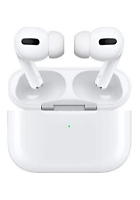

Article 3 ( airpod )
Les AirPods sont des écouteurs sans fil conçus par Apple, lancés pour la première fois le 13 décembre 2016. Ils se connectent automatiquement à vos appareils Apple, comme les iPhones et les Macs, grâce à leur technologie Bluetooth. Les AirPods offrent une réduction active du bruit et une autonomie de batterie allant jusqu'à 5 heures en lecture audio. Ils sont également compatibles avec d'autres appareils via Bluetooth, permettant une expérience audio sans fil. Les modèles récents, comme les AirPods Pro et les AirPods Max, intègrent des fonctionnalités avancées telles que la transparence audio et la détection de la fréquence cardiaque.
Retour acceuil
| nom de l'article | image | prix |
airpod |  | 129,99 € |